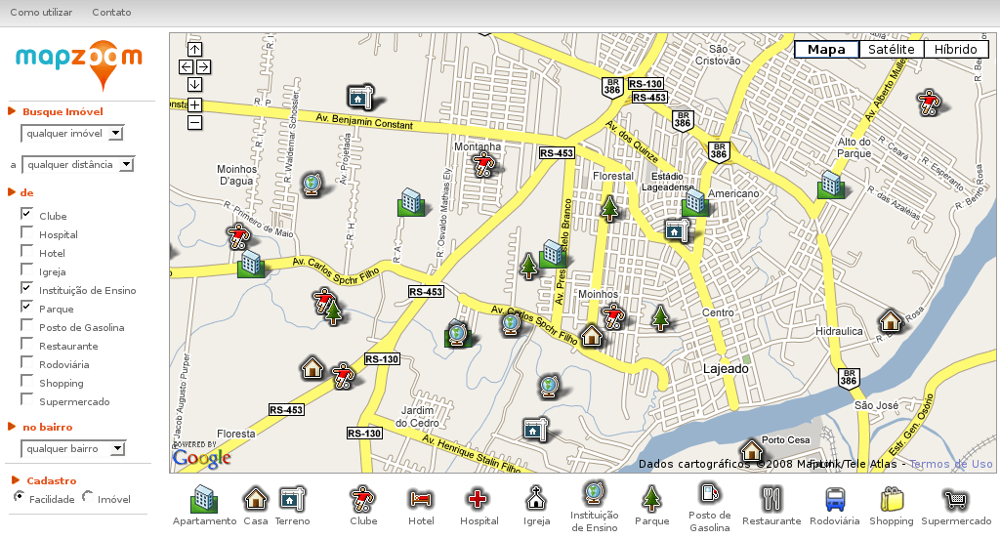

MapZoom aims to be as user friendly as possible, having the map as the main interface for the whole application and taking most of the screen space. A menu for the queries is located on the left side and the legends for the icons are located below the map. See Figure 1.
Figure 1: MapZoom – Main screen
The navigation on the map is doing exactly in the same way as in any Google Map, once this is the basis for the MapZoom application. If you leave the mouse pointer on the top of the map controls (located on the top left of the map) a small message will tell you the function for that specific control (move up, down, left, right, zoom in and zoom out).
On the top right of the map you can select different visualization aspects: map, sattelite and hybrid. "Map" is the default visualization. By selecting "Satellite" you will see satellite pictures of the region on the map (this is useful when you are entering new real estate information or new facilities). Depending on the region you are seeing you may not have sattelite images for closer zooms. The "Hybride" mode combines sattelite images and map information.
All images are loaded directly from the Google Maps servers. This means the greater the detail level of the image the greater is the time to load this image. We advise you to use the standard "map" visualization, switching to the other options only when needed.
When MapZoom is first loaded, it will show all real estate objects present in the database. When you click on the top of them, you will be shown more information as you can see on Figure 2.

Figure 2: Information on a real estate object
You can show or hide facilities by type by simply selecting and deselecting them. Figure 3 shows the display of facilities corresponding to the types park, club and educational institution, along with all real estate that were already shown on the map. When you click on the top of any facility you will also see more information about it.

Figure 3: Displaying parks, clubs and educational institutions, alog with the previusly shown real estate objects
Imagine the following scenario: a family with small children is looking for an apartment close to educational institutions, parks and clubs. The distance must be less than one kilometer. This selection is illustrated on Figure 4.

Figure 4: Displaying apartments located less than one kilometer from clubs, educational institutions and parks
The possible buyer of a house wants it to be located in the Moinhos neighborhood. Before buying this house, he wants to know which facilities are available in this neighborhood. This query is illustrated on the Figure 5.

Figure 5: Displaying a house and facilities in the Moinhos neighborhood
All of this searches may be combined accordingly to the user's specific needs.
When you click on any portion of the map where there is no facility or real estate, you will be prompted a form. The type of data you will be inserting using this form depends os the selection made on the bottom of the left menu (Facility or Estate). Figure 6 shows the fields you have available when insertion a new real estate. If you just clicked on the map by mistake, just close the form and continue using the system as before.

Figure 6: Form used to insert real estate information
When you are inserting a new facility or real estate, you will want to use the closer zoom possible, using the sattelite mode. Doing this you can make sure you are adding your location as close as possible to its real coordinates. See Figure 7.

Figure 7: Inserting UNIVATES, an Educational Institution